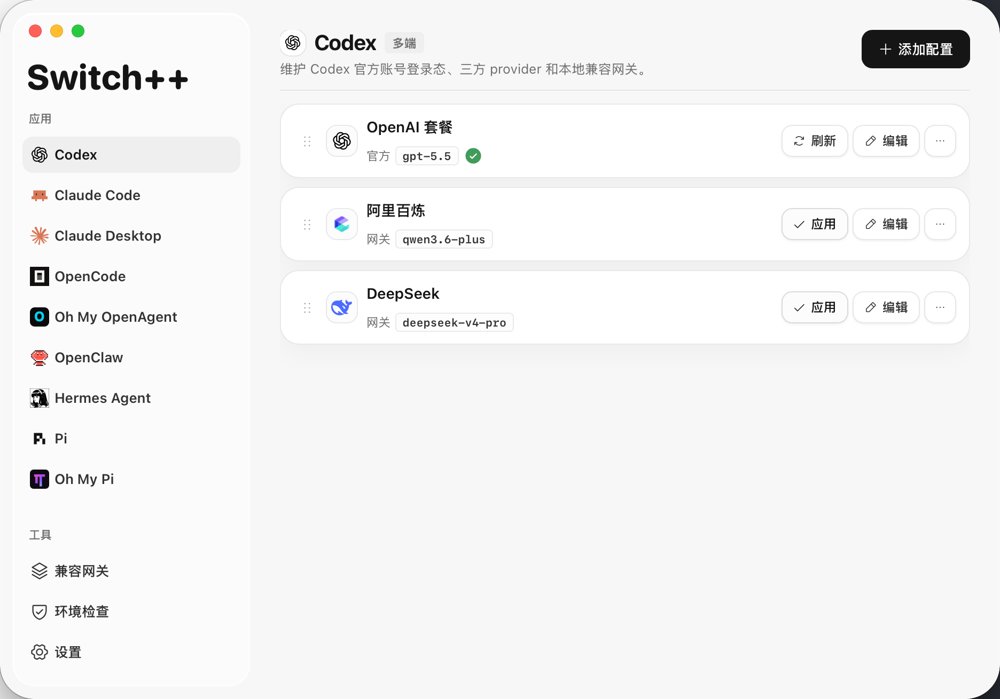
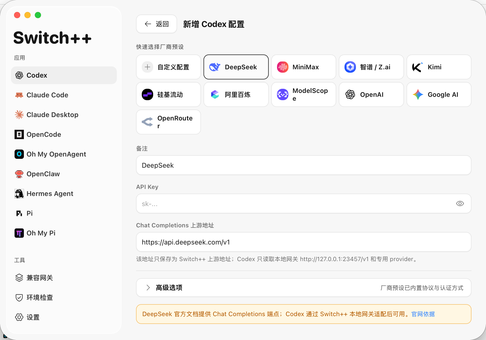
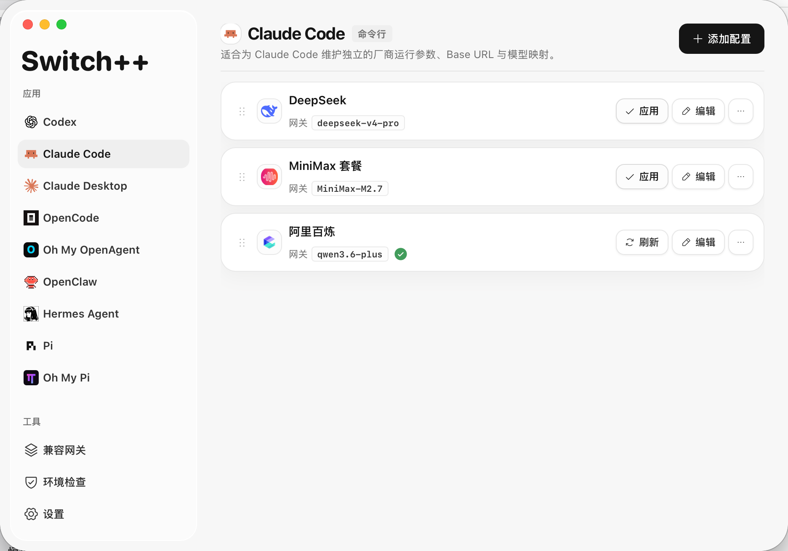
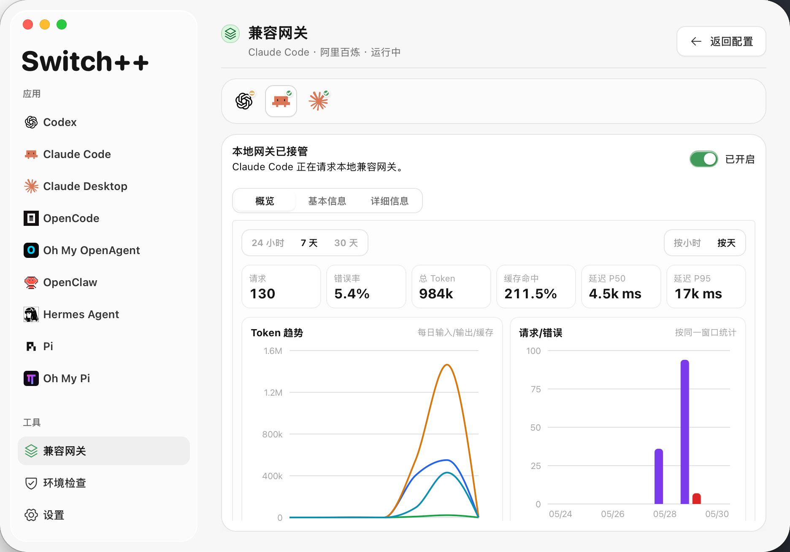
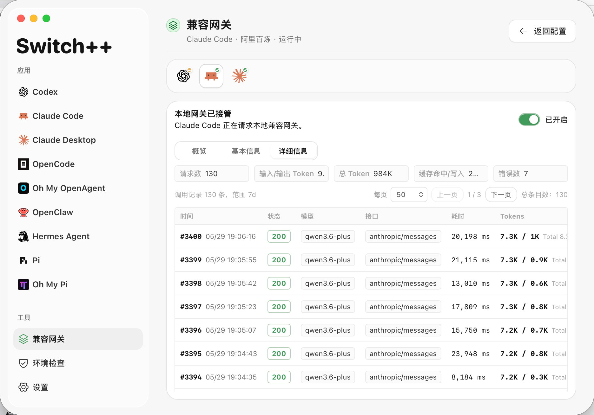
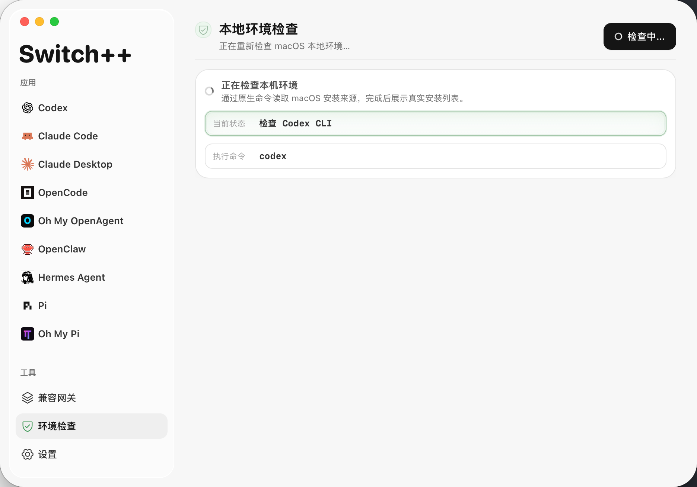

Switch++
面向 Claude Code、Claude Desktop、Codex CLI、Codex Desktop 和本地 AI 编程 Agent 的三方模型接入、配置切换和模型路由控制台，内置本地 OpenAI / Anthropic 兼容网关、请求诊断和可审计配置写入。
Switch++
A third-party model access, profile switching, and model routing console for Claude Code, Claude Desktop, Codex CLI, Codex Desktop, and local AI coding agents, with a local OpenAI / Anthropic compatibility gateway, request diagnostics, and auditable config writes.
为什么选择 Switch++ Why Switch++
Switch++ 不只是一个 provider 切换器，而是面向 Claude / Codex 桌面与本地 agent 生态的三方模型接入控制台。
如果你在搜索 Claude Code 第三方模型、Codex 第三方模型、Codex 配置切换、Claude Desktop 本地网关、OpenAI-compatible 或 Anthropic-compatible 代理，Switch++ 覆盖的是同一类工作流。
管理桌面端第三方配置库，通过本地网关和模型映射把官方模型名转发到厂商真实模型。
三方配置可独立使用；插件、移动端和 connector 等官方能力需切回官方配置管理和验证。
处理 Anthropic、OpenAI、Responses、Chat Completions 等协议差异，并统一请求记录与启停。
请求详情、token、缓存命中、缓存创建、错误记录和趋势图都在本机可见。
JSON / TOML 先预览，推荐选项用勾选框呈现，应用前创建备份。
覆盖 Claude Code、Claude Desktop、Codex、Hermes、OpenCode、OpenClaw、Pi、Oh My 系列入口。
Switch++ is not just a provider switcher. It is a third-party model access console for Claude / Codex desktop workflows and local agent toolchains.
If you search for Claude Code third-party models, Codex third-party models, Codex config switching, Claude Desktop local gateways, OpenAI-compatible proxies, or Anthropic-compatible proxies, Switch++ covers that workflow.
Manage the desktop config library and route official Claude model names to real provider models through the local gateway.
Use third-party profiles independently; manage and verify plugins, mobile access, and connectors from an official profile.
Handle Anthropic, OpenAI, Responses, and Chat Completions protocol differences with unified request records and start/stop controls.
Request details, tokens, cache hits, cache creation, errors, and trend charts stay visible locally.
Preview JSON / TOML before writing, expose recommended options as checkboxes, and create backups before applying changes.
Cover Claude Code, Claude Desktop, Codex, Hermes, OpenCode, OpenClaw, Pi, and Oh My family entry points.
功能亮点 Highlights
- 让第三方模型稳定进入 Claude Code、Claude Desktop、Codex CLI、Codex Desktop 以及常用本地 AI 编程工具。
- 支持 DeepSeek、MiniMax、Kimi、GLM 等国产模型接入 Codex 客户端及 Claude 客户端，并提供本地协议适配路径。
- Codex 三方配置可独立使用；插件、移动端和 connector 等官方能力需切回官方配置管理和验证。
- 在官方账号模式和第三方模型厂商模式之间快速切换。
- 为不同工具保存多套配置，并支持新增、编辑、复制、删除、排序和一键应用。
- 写入前预览配置内容，并在应用前自动保留备份，便于回退。
- 内置主流厂商预设、模型发现、能力提示和配置建议，减少手动试错。
- 提供本地兼容网关，统一承接 Claude 与 Codex 的第三方模型调用，并处理 Anthropic / OpenAI / Responses / Chat Completions 之间的协议差异。
- 展示网关状态、调用记录、消耗统计、缓存读写、错误记录和趋势图表，方便定位问题。
- 检查本机工具、应用、配置文件、安装版本和可升级状态。
- 支持一键安装、升级、卸载常用 CLI 工具。
- 支持中英双语界面、紧凑侧边栏、系统托盘和桌面原生窗口体验。
- Bring third-party models into Claude Code, Claude Desktop, Codex CLI, Codex Desktop, and common local AI coding tools.
- Connect domestic model providers such as DeepSeek, MiniMax, Kimi, and GLM to Codex and Claude clients through local protocol adaptation when needed.
- Use Codex third-party profiles independently; manage and verify plugins, mobile access, and connectors from an official profile.
- Switch quickly between official-account mode and third-party provider mode.
- Save multiple profiles per tool, then add, edit, duplicate, delete, reorder, and apply them quickly.
- Preview local configuration before writing it, with backups created before changes are applied.
- Use built-in provider presets, model discovery, capability notes, and recommendations to reduce trial and error.
- Route Claude and Codex third-party model calls through the local compatibility gateway, including Anthropic / OpenAI / Responses / Chat Completions protocol differences.
- Inspect gateway status, request history, usage statistics, cache reads, cache creation, recent errors, and trend charts.
- Check local tools, apps, config files, installed versions, and available upgrades.
- Install, upgrade, and uninstall common CLI tools from the app.
- Use the bilingual desktop interface with compact navigation, tray support, and native window behavior.
界面预览 Screenshots






适用场景 Use Cases
- 在一个桌面应用里管理 Claude Code、Claude Desktop、Codex、Codex Desktop、Hermes、OpenCode、OpenClaw 和 Pi 生态配置。
- 在官方账号模式和第三方模型厂商模式之间切换。
- 覆盖 Claude Code 第三方网关、Claude Desktop 本地网关、Codex Desktop、本地 Codex third-party provider、OpenAI-compatible 和 Anthropic-compatible 端点。
- Codex 三方模型可通过本地 Responses runtime gateway 实时路由；三方配置不依赖官方登录，插件、移动端和 connector 属于官方账号能力，需要切回官方配置管理和验证。
- 通过本地兼容网关查看实时调用记录、token 统计、缓存命中和缓存创建统计。
- 写回本地配置前检查配置内容、推荐选项和目标文件位置，并优先创建备份。
- Manage Claude Code, Claude Desktop, Codex, Codex Desktop, Hermes, OpenCode, OpenClaw, and Pi-family configuration in one desktop app.
- Switch between official-account mode and third-party model provider mode.
- Cover Claude Code third-party gateways, Claude Desktop local gateway profiles, Codex Desktop, local Codex third-party providers, OpenAI-compatible endpoints, and Anthropic-compatible endpoints.
- Route Codex third-party models through the local Responses runtime gateway; third-party profiles do not depend on official login, while plugins, mobile access, and connectors should be managed and verified from an official profile.
- Inspect local compatibility gateway calls, token totals, cache hits, and cache creation statistics.
- Review generated local configuration, recommended options, and target file locations before writing, with backups created first.
支持的目标应用 Supported Target Apps
| 目标应用 | Switch++ 管理内容 | 主要配置位置 |
|---|---|---|
| Target app | What Switch++ manages | Main config location |
| Claude Code | CLI settings、模型映射、网关环境变量、功能开关 CLI settings, model mapping, gateway environment variables, feature flags | ~/.claude/settings.json |
| Claude Desktop | 桌面端第三方配置库 Desktop third-party config library | macOS: ~/Library/Application Support/Claude-3p/configLibraryWindows: %APPDATA%\Claude-3p\configLibrary |
| Codex | 官方登录配置和第三方厂商配置 Official login config and third-party provider config | ~/.codex/auth.json, ~/.codex/config.toml |
| OpenCode | OpenAI-compatible provider、默认模型、small model OpenAI-compatible provider, default model, small model | ~/.config/opencode/opencode.json |
| Oh My OpenAgent | agents/categories 模型路由，并同步 OpenCode provider agents/categories model routing, with synced OpenCode provider config | ~/.config/opencode/oh-my-openagent.json |
| OpenClaw | provider 与默认 agent 模型 provider and default agent model | ~/.openclaw/openclaw.json |
| Hermes Agent | custom provider 与默认模型 custom provider and default model | ~/.hermes/config.yaml |
| Pi | custom provider、默认 provider 与默认模型 custom provider, default provider, and default model | ~/.pi/agent/models.json, ~/.pi/agent/settings.json |
| Oh My Pi | provider 与 agent/category 模型路由 provider and agent/category model routing | ~/.omp/agent/models.yml |
下载与安装
打开发布页，按系统选择安装包：
- macOS Apple Silicon：
aarch64.dmg - macOS Intel：
x64.dmg - Windows x64：
x64-setup.exe - Linux x64：
amd64.AppImage
macOS 首次启动授权
如果 macOS 提示 Switch++ 不是来自 App Store 或无法验证开发者，先确认系统允许打开非 App Store 应用：
- 打开「系统设置」。
- 进入「隐私与安全性」。
- 找到「安全性」。
- 在「允许以下来源的应用程序」里选择「任何来源」。
如果没有看到「任何来源」，可以在终端执行下面的命令启用该选项：
sudo spctl --master-disable然后回到「系统设置」>「隐私与安全性」>「安全性」，确认「任何来源」已经可选并已启用。
首次安装后，macOS 还可能因为下载文件带有 quarantine 标记而阻止启动。确认安装包来自本仓库发布页后，执行：
sudo xattr -rd com.apple.quarantine "/Applications/Switch++.app"
open "/Applications/Switch++.app"如果仍然提示无法打开，请再回到「隐私与安全性」页面，在 Switch++ 提示项旁点击「仍要打开」，然后重新启动应用。
Switch++ 可以正常打开后，如需恢复 macOS 默认安全设置，可执行：
sudo spctl --master-enableDownload and Install
Open the release page and choose the installer for your system:
- macOS Apple Silicon:
aarch64.dmg - macOS Intel:
x64.dmg - Windows x64:
x64-setup.exe - Linux x64:
amd64.AppImage
macOS First Launch Authorization
If macOS says Switch++ is not from the App Store or cannot verify the developer, first confirm that macOS allows apps from outside the App Store:
- Open System Settings.
- Go to Privacy & Security.
- Find Security.
- Under Allow applications downloaded from, select Anywhere.
If Anywhere is not visible, run this command in Terminal to enable it:
sudo spctl --master-disableThen return to System Settings > Privacy & Security > Security, and confirm that Anywhere is available and selected.
After first install, macOS may still block launch because the downloaded app has a quarantine flag. If you have confirmed the installer came from this repository's release page, run:
sudo xattr -rd com.apple.quarantine "/Applications/Switch++.app"
open "/Applications/Switch++.app"If macOS still blocks the app, return to Privacy & Security, click Open Anyway next to the Switch++ warning, and launch the app again.
After Switch++ opens normally, you can restore the default macOS security setting with:
sudo spctl --master-enable版权与许可
Copyright (c) 2026 sssstwee.
本项目采用自定义的 Switch++ Proprietary Non-Commercial Source License 1.0。这不是 OSI 定义的开源协议；源码仅允许个人、教育、研究或评估用途查看、运行和修改。未经书面许可，严格禁止商业使用、企业内部使用、SaaS/托管服务、付费交付、商业项目集成、发布修改版或衍生版本，以及用于机器学习训练、数据集、评测或自动化开发工具。
完整条款见仓库根目录 LICENSE 文件。
Copyright and License
Copyright (c) 2026 sssstwee.
This project is licensed under the custom Switch++ Proprietary Non-Commercial Source License 1.0. This is not an OSI open-source license. The source code may be viewed, run, and modified only for personal, educational, research, or evaluation purposes. Without prior written permission, commercial use, internal company use, SaaS or hosted service use, paid delivery, commercial project integration, publication of modified or derivative versions, and use for machine learning training, datasets, evaluation, or automated development tools are strictly prohibited.
See the repository LICENSE file for the full terms.